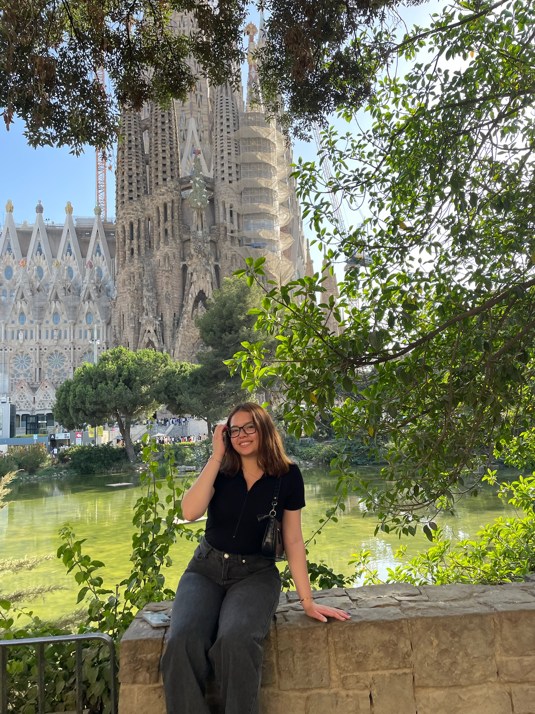

Georgetown University student majoring in International Business and Marketing.
I love content creation, creativity, branding, and learning web development.
View My Projects
I’m originally from El Salvador and currently studying at Georgetown University in Washington, DC. As an first-generation college student, I’m passionate about creativity, branding, content creation, and building meaningful impact through marketing and design.
Outside of school, I love exploring new places, journaling, making content, and surrounding myself with flowers. Lilies are my favorite ♡
HTML
CSS
Content Creation
Branding
A personal website created with HTML and CSS.
Creative TikTok and social media content ideas.
Email: yasminleonf@gmail.com
Instagram: @yasminxfl_